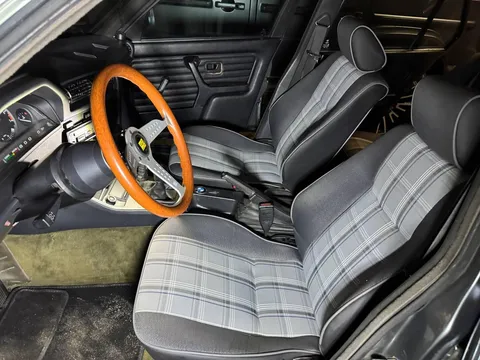
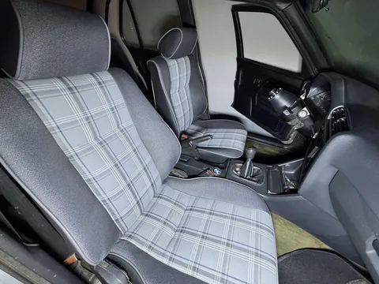
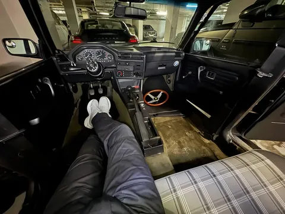
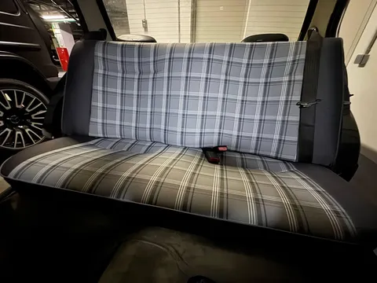
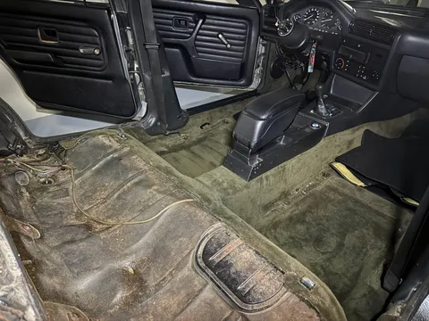
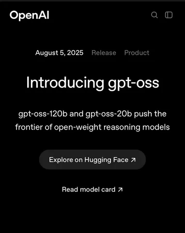

Наконец удалось забрать сиденья с перешива. Настал момент установки. И, вроде, невелика наука - 4 гайки и всех делов. Но нет, возиться пришлось несколько часов, умотавшись аки пёс.
Сначала вне машины синхронизировать салазки, чтобы были в одном положении. Потом попасть, чтобы все дырки "стреляли". Потом насадить салазки на шпильки так, чтобы стояло ровно, а шпильки торчали достаточно для наживления гаек (тут пришлось прибегнуть к умеренному кувалдингу). И осложняется это все тем, что ты не имеешь одновременного доступа ко всем отверстиям. Подвинул сидушку на салазках назад - можешь подобраться к передним отверстиям. Подвинул вперед - теперь к задним. Снова назад, потому что спереди соскочило. И так далее. А незакрепленное сиденье по салазкам ездить отказывается... Ну и для доступа к гайкам нужно особое сочетание рожкового ключа, торцевых головок, карданчика и трещоток разных размеров, потому что что-то постоянно куда-то упирается и не лезет. Ах да, пришлось еще переставить замки ремней от прежних кресел, потому что новые были без оных.
И то не вышло до конца - задние шпильки оказались коротковаты для салазок новых кресел - нормально закрепить их не получилось. Так что по большому счету кресла держатся только на передних гайках. Впрочем, это лучше, чем только за задних - у меня была девятка жигулей, где передние крепления отгнили, и клесло водителя держалось только на задних, и при ускорении кресло эффектно отклонялось назад, будто ты набираешь первую космическую.
В задним диваном все проще - 2 крюка, 2 защелки и готово. Но и там был подвох. Нужно было установить замки задних ремней. Там два болта под разные сиденья. Выкрутил один, закрепил замки, закручиваю - не держит. Ну конечно - сгнила резьба и болт прокручивается. Ладно, средний ремень нам не нужен, крепим во второе место. Тут держит. Ура! Но вот незадача - пряжки не подходят к замкам... Видать, не та версия. Что ж, значит, задние ремки будут пока носить декоративный характер. Все равно толпой мы на бэхе ездить не планируем.
Зато результат, кажется, получился отменный. Кресла теперь аутентичные (ранее стояли какие-то левые от е90, их продал на авито, притом спрос на них оказался бешеный - мне за день написало и позвонило 15 человек) и в нарядной ткани. Это что-то среднее между оригинальным motorsport-исполнением и ваговской gti-клеткой. Мне нравится. #лёха_строит_бэху
